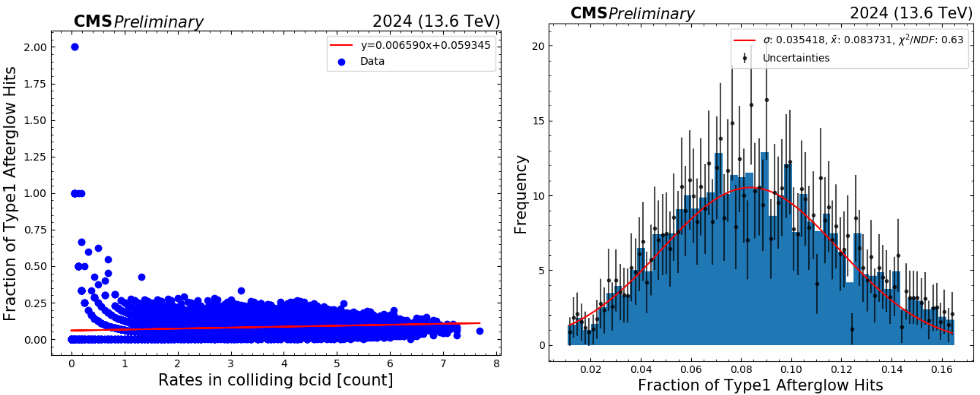

The CMS Drift Tubes (DT) Detector plays a crucial role in the muon detection system of the Compact Muon Solenoid (CMS) experiment at CERN. This study focuses on analyzing the data collected from the DT detector, specifically for luminosity measurements in the CMS experiment.
The analysis uses data from the DT Phase-2 Demonstrator system, including background contributions such as type 1 afterglow hits, cosmic rays, and beam-induced backgrounds. The study also explores the calibration process required for accurate luminosity measurements.
The DT detector is located in the barrel region of CMS (|η| < 1.2) and is responsible for tracking muons. Each drift tube consists of a gas-filled chamber with a stretched wire. When a charged particle passes through, it ionizes the gas, and the electrons move toward the wire, allowing the determination of the muon's trajectory.
Luminosity is a key parameter in high-energy physics, representing the number of potential collisions occurring in a particle accelerator over time. It is crucial for normalizing cross-section measurements and evaluating the performance of the LHC. The DT detector helps measure luminosity by analyzing muon trigger rates.
The study focuses on suppressing background noise, such as Type 1 Afterglow Hits, which can affect measurement accuracy. Corrections were applied to reduce these contributions, leading to more precise luminosity calculations. Additionally, cosmic and beam-induced backgrounds were quantified to assess their impact on the detector's performance.
The data analysis follows these key steps:
The results showed that Type 1 Afterglow Hits contributed approximately 12.72% to the total recorded rates in certain DT channels. After corrections, the accuracy of the luminosity measurement improved. Beam-induced and cosmic background contributions were found to be negligible compared to the primary muon trigger rates.
The calibrated luminosity for Fill 9062 was computed using the vdM method, yielding a visible cross-section (σvis) of approximately 2.001 µb. Future refinements in the calibration process could further reduce the uncertainties in luminosity estimation.
Mean value of afterglow type 1 (background) for channel 1 of the DT detector in 2024.
The datasets and analysis code used in this study are restricted to CMS collaboration members. Access is granted only to authorized users with appropriate credentials.